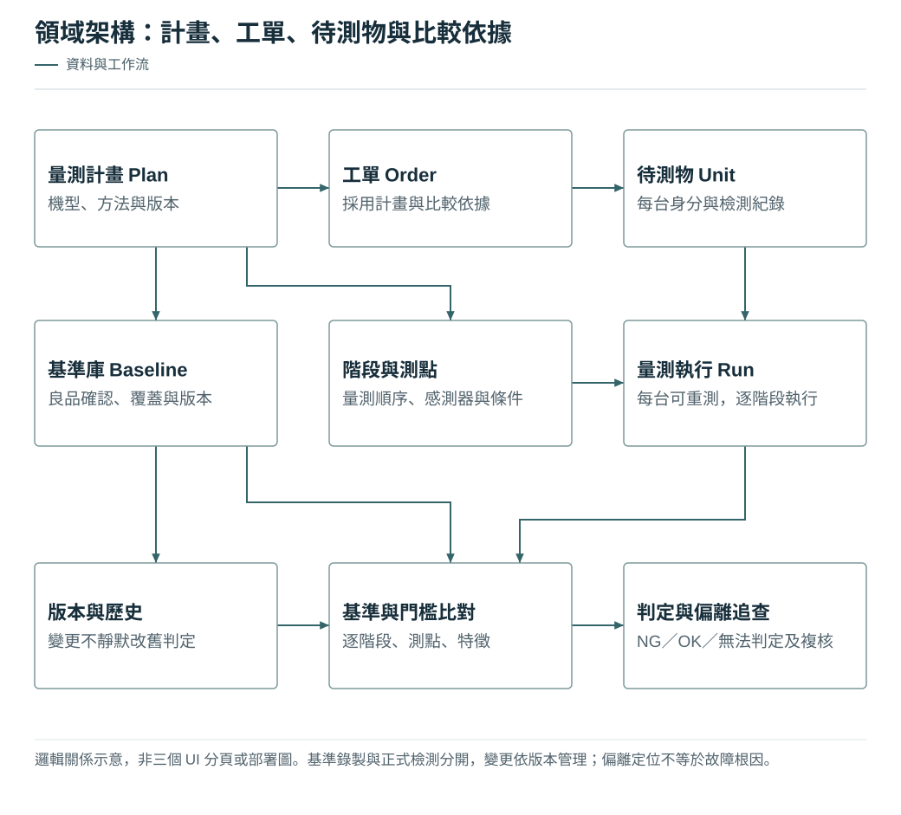
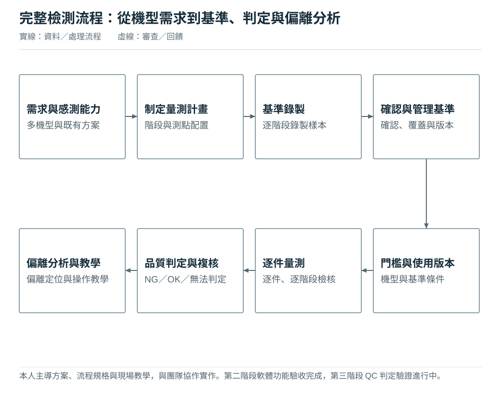

情境與目標
不同機型有不同的階段與量測點，需要一套可設定計畫、建立可信基準、逐件判定並追查偏離的檢測方法，而非把所有量測混入同一台監控設備的歷史。
我主導方案、領域模型、流程及介面規格，與團隊協作開發並完成現場教學。第二階段完成軟體功能驗收，第三階段聚焦現場品質判定的驗證。
- 先把機型需求定義成可重用的量測計畫：有哪些階段、在哪些測點、用哪些感測器。
- 用獨立基準錄製與基準庫建立比較依據，再管理門檻與使用版本。
- 逐件執行並判定NG／OK／無法判定，再深入部位與特徵追查偏離，並教會使用者操作。

檢測方案與模組
| 模組 | 設計與系統機制 |
|---|---|
| 量測計畫：機型、階段與測點 | 把現場檢測需求轉成可設定的操作與比較規格。 定義適用機型、階段順序、每段測點、感測器配置、量測條件與比對規則；計畫版本與執行紀錄分開。 |
| 基準錄製與基準庫 | 建立可追查的良品比較依據。 基準與檢測採不同目的；錄完需人工確認納入，檢查各階段／測點覆蓋，並保留基準版本與使用狀態。 |
| 工單、待測物與量測執行 | 同一套治具逐台檢測，資料仍能分清楚。 工單採用計畫與基準，逐台建立待測物與量測Run；階段準備先核對感測器與位置，再開始採集。 |
| 門檻、NG／OK與人工複核 | 讓判定有依據，也知道什麼情況不能判。 按階段與測點比對對應基準及門檻，保留未完成、資料不足或基準不合的原因；變更依版本及重判規則處理。 |
| 特徵偏離分析與追溯 | 從整台結果追到需要複查的部位與特徵。 依當次基準呈現分布、量測特徵與偏離程度；納入判定的必要點缺資料時保留原因，偏離排序不直接當故障根因。 |
系統架構與流程
架構說明
- 輸入
- 機型需求、量測計畫的階段／測點、感測器配置、基準樣本與待測物。
- 處理方式
- 計畫定義方法，工單採用版本，待測物逐次量測；基準錄製、人工納入與門檻管理分流，再依階段／測點比較並追查特徵偏離。
- 產出
- NG／OK／無法判定、階段／測點／特徵的比較依據與追溯紀錄，以及現場可操作、可教學的檢測流程。
三層主要UI以計畫清單、工單作業與待測物看板組織工作；底層另有量測Run、階段／測點、基準與判定。UI層次、工單分頁與判讀層次是不同概念。

流程圖

基準不是錄完就成為良品
基準錄製與正式檢測分流，錄製良品需人工確認納入；後續版本依同一計畫版本統整多張基準工單的收集進度。樣本修正、基準納入與門檻計算分開，NG樣本不直接當良品基準；仍需檢查階段與測點覆蓋。
版本與門檻變更不能污染舊判定
計畫與良品基準依版本及使用狀態管理，量測保留當時採用的比較依據；後續門檻與樣本調整不靜默改寫舊結果，需依明確的重判或重測流程更新。
保留追溯，也說清楚資料期限
保存量測、判定與採用基準的關係，讓品質問題能回查；原始讀數與WAV有保存期限，不承諾永久完整重建。特徵偏離支援定位比較差異，根因與正式品質效能仍需驗證。
操作介面與互動
計畫：讓不同機型共用一套可配置的方法
我設計由需求出發的量測計畫與階段／測點規格，將感測器配置及比較條件放在同一脈絡。計畫變更與既有工單使用版本分開，保護歷史結果。

工單：把計畫落到每一台待測物
工單串接待測物、當次量測、比對明細與結果。使用者能逐台選擇並進入量測；基準、複查與報告依作業需要整合，避免深層往返。

量測與判讀：先確認位置，再看偏離
準備與正式量測分步，讓現場先核對感測器、測點及狀態。量測後從整體判定深入階段、測點與特徵差異，供品質複核與後續追查。

更多技術細節
需求與規格如何對齊
從多測點採集、基準重錄、插單與工單銜接釐清需求，再對齊受測件、量測批次、判定與報告。對外功能、內部工項及驗收條件使用同一作業流程。
現場問題如何回到產品
2026 年 10 月 12 日完成到場示範、教育訓練及排障，定位主機時間偏移造成的連線中斷並完成後續修正。現場回饋回到產品開發；到場活動不等於最終驗收簽核。
第三階段 QC：定義問題並驗證 OK／NG
第二階段完成軟體功能驗收後，我持續分析量測資料與特徵。第三階段將檢查良品基準是否穩定、OK／NG 是否容易誤判，以及哪些條件下需要回報無法判定。我準備與客戶對齊樣本與品質標記的取得方式、QC 問題與現場驗證範圍。
成果與驗證範圍
實際產出
完成可配置的量測、基準比對和偏離分析流程、現場教學及第二階段軟體功能驗收。第三階段 QC 正研究 OK／NG 可分性，並規劃補收資料與驗證範圍。
驗證與限制
第二階段軟體功能已完成驗收。第三階段須以可追溯的現場樣本驗證 OK／NG 判定，與客戶對齊資料收集、QC 問題和適用範圍。辨識成效及適用機型仍待驗證。